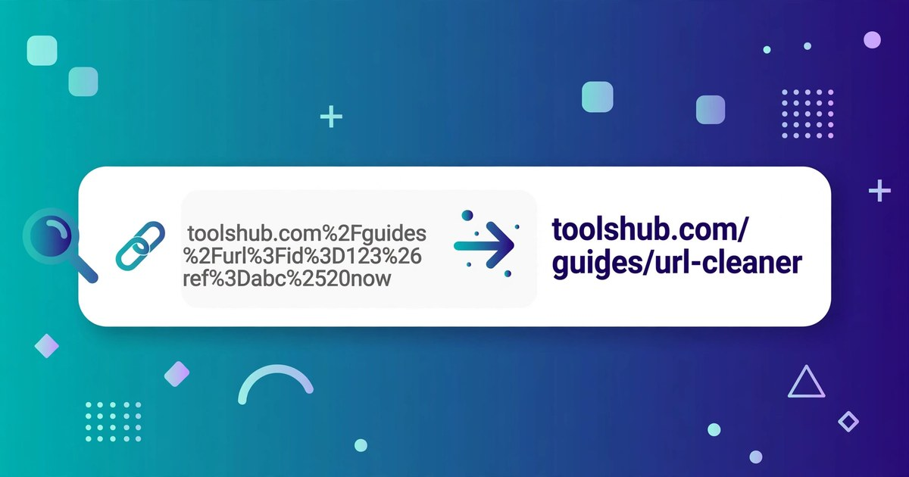

How to Encode and Decode a URL Online
Turn messy text into a safe, shareable link — and turn an encoded link back into readable words. Free, no signup, right in your browser.
November 4, 2026 · 6 min read

To encode or decode a URL online, open ToolsHub's URL Encoder/Decoder, paste your text or link, and click Encode or Decode. That is the whole process: no signup, no download, and nothing you paste leaves your browser.
Links break for a simple reason: a URL can only safely carry a limited set of characters. The moment a value contains a space, an ampersand or a non-English letter, the link either fails or means something different from intended. Encoding fixes that by swapping each unsafe character for a safe three-character code.
What the URL Encoder/Decoder does
The URL Encoder/Decoder has two parts. The main box percent-encodes any text you paste, or decodes an encoded URL back into readable text, with a Copy result button for the output. Below it, the Query String Splitter takes a full URL and breaks its query string into a clean table of parameter names and values, so a long tracking link becomes readable.
The encoding rule is simple: every unsafe byte becomes a percent sign followed by two hexadecimal digits. A space becomes %20, an ampersand becomes %26, and a percent sign itself becomes %25. Letters, digits and a few safe marks are left alone, which is why most of an ordinary address looks unchanged after encoding.
Encode or decode a URL in 6 steps
- Open the URL Encoder/Decoder and look at the two boxes: Text or URL at the top, and the Result box below it.
- Paste your text or link into the top box. For encoding, paste the value you want made safe — a search phrase, a name, or a redirect address. For decoding, paste the encoded link.
- Click Encode or Decode. Encode turns unsafe characters into percent codes; Decode turns percent codes back into readable characters.
- Check the Result box before you use it. One glance catches a double-encoded %2520.
- Click Copy result. Copying beats retyping: a hand-copied percent code with one wrong digit points somewhere else entirely.
- For a long link, use the Query String Splitter. Paste the full URL in and read each ?param=value pair in the table.
A worked example: what encoding does to real text
Start with something ordinary: hello world. Encoding it gives hello%20world — one space replaced by one three-character code, so 11 characters become 13. Add a percent sign: 100% sure is 9 characters, but encodes to 100%25%20sure, 13 in total, because both the percent sign and the space each become three characters.
Non-English letters grow more, because encoding works on bytes, not letters. The word café is 4 letters, but the é alone needs two bytes, so it encodes to caf%C3%A9 — 9 characters in total. And a phrase with a reserved character shows why encoding exists at all: black shoes & white socks encodes to black%20shoes%20%26%20white%20socks. Without encoding, that bare ampersand would split the value into two parameters and change the meaning of the link.
| Character | Encoded form | Why it matters |
|---|---|---|
| Space | %20 | Links cannot contain raw spaces |
| & | %26 | Separates parameters — must not appear inside a value |
| = | %3D | Joins name to value — must not appear inside a value |
| ? | %3F | Starts the query string — must not appear inside a value |
| + | %2B | Often read as a space in query strings |
| % | %25 | The escape character itself, so it must be escaped too |
| / | %2F | Separates path parts — must not appear inside a value |
| # | %23 | Starts a page fragment and cuts the URL short |
A worked example: reading a query string with the splitter
Take a search link such as https://example.com/search?q=black%20shoes&sort=price&limit=20. Pasted into the Query String Splitter, it becomes a table of three parameters: q is black shoes, sort is price, and limit is 20. The splitter also decodes as it splits, so you read the real values instead of the percent codes.
This is the fastest way to audit a link someone sent you: the table shows every parameter plainly, including any redirect address buried inside another parameter — exactly the kind of thing worth checking before you click.
URL encoding, Base64, or HTML encoding: which one do you need?
| Tool | What it changes | Use it when |
|---|---|---|
| URL Encoder/Decoder (this tool) | Unsafe characters into % codes | Making a value safe inside a link |
| Base64 Encoder/Decoder | Any data into letters, digits, + and / | Embedding data in text, email or code |
| HTML Encoder/Decoder | <, >, & into HTML entities | Showing code safely inside a web page |
| Slug Generator | A title into a short hyphenated address | Choosing the readable part of a page URL |
Match the tool to the destination: a link needs URL encoding, a page needs HTML encoding, and data in transit needs Base64.
5 mistakes that corrupt links
- Encoding the whole URL instead of one value. Encoding a full address also encodes its slashes, question mark and ampersands, destroying the structure. Encode each parameter value, then place it into the URL.
- Encoding twice. A space encoded once is %20; encoded again it becomes %2520, because the percent sign itself gets encoded. If your link shows %25, it has almost certainly been through the process one time too many — decode once and check.
- Leaving a bare ampersand in a value. An unencoded & inside a value splits it into two parameters at that exact point. Anything after the ampersand becomes a new parameter name, and your value is silently cut short.
- Assuming + always means a space. In a query string, a plus sign is often read as a space, so a genuine plus in your value must be encoded as %2B. The phrase a+b encodes to a%2Bb — leave it raw and a reader may see a b.
- Sharing the encoded version when the readable one would do. Encoded links are harder to read, harder to trust and harder to spot-check. Encode only the values that need it, and keep the rest of the address human-readable.
Frequently asked questions
What does URL encoding actually change?
It replaces characters that are not safe in a URL with a percent sign followed by two hexadecimal digits. A space becomes %20, an ampersand becomes %26, and a percent sign itself becomes %25. Letters, digits and a few safe marks stay unchanged.
Should I encode a whole URL or just one value?
Encode one value at a time. Encoding a whole URL also encodes its slashes, question mark and ampersands, which destroys the structure. Encode each parameter value, then place it into the URL unchanged around it.
Why does my link show %2520 instead of a space?
Because it was encoded twice. The first pass turned the space into %20, and the second pass encoded the percent sign itself into %25, giving %2520. Decode once and you are back to %20; decode again and you are back to a space.
Is anything I paste sent to a server?
No. The URL Encoder/Decoder runs entirely in your browser, and its page states that your text is never uploaded anywhere.
Related tools: URL Encoder/Decoder · Base64 Encoder/Decoder · HTML Encoder/Decoder · Slug Generator